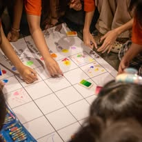
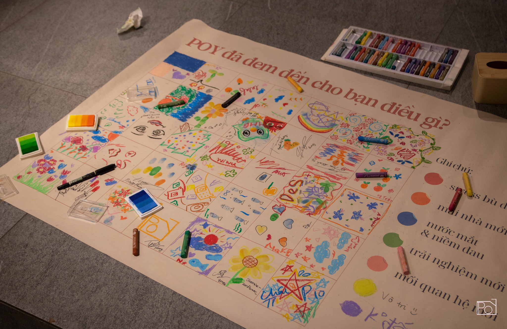
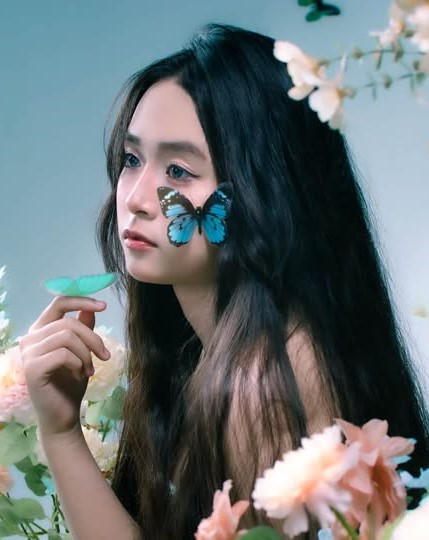
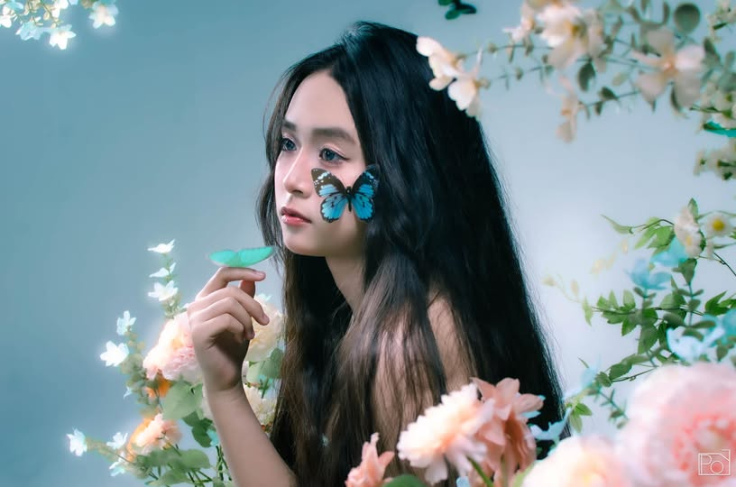
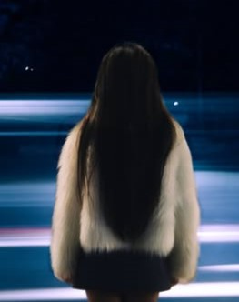
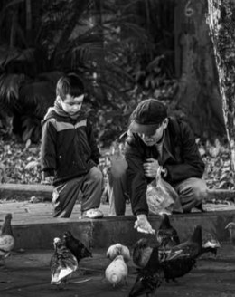

About Us
CLB POY - Photo Of Youth là CLB nhiếp ảnh trực thuộc trường THPT Yên Hoà.

CLB POY - Photo Of Youth là CLB nhiếp ảnh trực thuộc trường THPT Yên Hoà. CLB thành lập vào ngày 09/09/2018 bởi những bạn học sinh Yên Hoà có đam mê với “bộ môn nghệ thuật” này. CLB được lập nên với mong muốn mở ra một “môi trường” để các bạn có thể thoả sức với niềm đam mê của bản thân và như một bước đệm để các bạn phát triển về sau. Không những vậy, POY còn mong muốn có thể góp phần “đóng băng” những khoảnh khắc, kỉ niệm đáng nhớ của thời học sinh qua lăng kính máy ảnh để chính chúng ta không phải nuối tiếc những điều đã qua.

Trải qua 7 năm kể từ ngày thành lập, POY đang bước từng bước trên con đường phát triển, mong rằng các bạn sẽ luôn đồng hành cùng với POY trên chặng đường này. Hãy cùng POY mang “bộ môn nghệ thuật” nhiếp ảnh đến gần với các bạn học sinh Yên Hoà nói riêng và các bạn trẻ nói chung.
Projects
Các dự án POY đã từng làm

Thanh Khôi
Thanh Khôi

Giữa những xô lệch của thời gian, có những khoảnh khắc mong manh như tơ khói, khẽ chạm là tan. Song chính trong thời khắc ấy, dường như đâu đó trong ta đang lặng lẽ chuyển mình.
Không còn những vấn vương ngày cũ. Không còn mải miết đuổi theo ánh sáng, cũng chẳng trú ngụ mãi trong bóng đêm. Chỉ lặng yên giữa lằn ranh mong manh ấy, khẽ cựa mình như một cánh bướm vừa thoát khỏi lớp vỏ cuối cùng.
Là mơ hay là thực? Là phút níu giữ thứ gì đó sắp tàn, hay khoảnh khắc buông tay để chạm đến chân trời mới?
Chẳng ai biết chắc. Chỉ biết rằng, sẽ đến lúc ta phải tự mình gỡ bỏ chiếc kén của sợ hãi, để chuyển mình rực rỡ như cánh bướm kia. Chẳng phải chỉ để trở thành một ai đó toàn mĩ hơn, mà là để gặp lại chính mình sau bao lần quên lãng.
Và trong hành trình hóa thân ấy, vẻ đẹp đâu chỉ nằm ở hình hài ta đã trở thành, mà còn ở khoảnh khắc ta dám rũ bỏ những ngổn ngang còn đang bỏ ngỏ, để nhẹ nhàng thả mình vào khoảng không, nơi cái đẹp sinh ra từ chính sự mong manh, dịu dàng và tự do nhất.

MISS UNDERSTOOD
NÉT XUÂN
